A. Asynchronous Perception and Capture-Time Registration (SLAM + 6D estimation + timing + registration)
1. Sensor Input (Mobile Cart)
Two RGB-D cameras + LiDAR
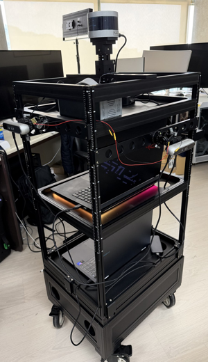
RGB image (30 Hz)

Depth image (30 Hz)
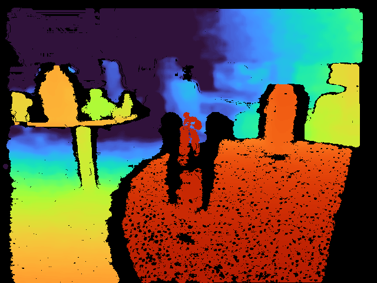
- RGB-D 640×480, 30 Hz; LiDAR 10 Hz
- SLAM camera and recognition camera, hardware-synchronized
- intrinsics from the recording; extrinsic X estimated
- indoor run, 8 objects (128 s)
SLAM (existing ORB-SLAM3; not the main contribution)
SLAM pose stream (30 Hz)
keyframe images (real)
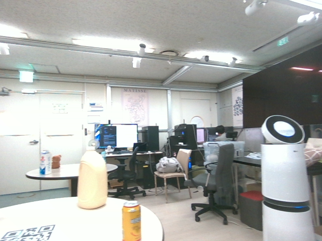
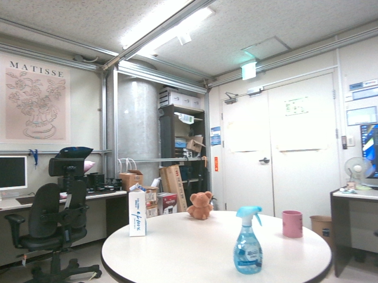
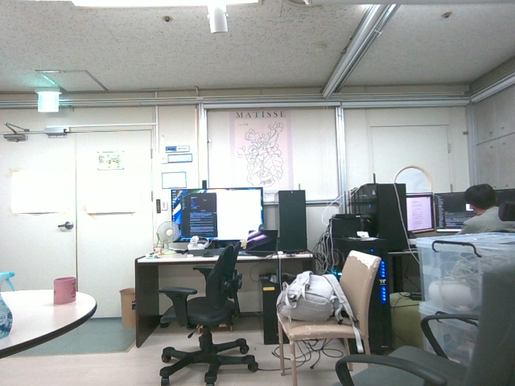
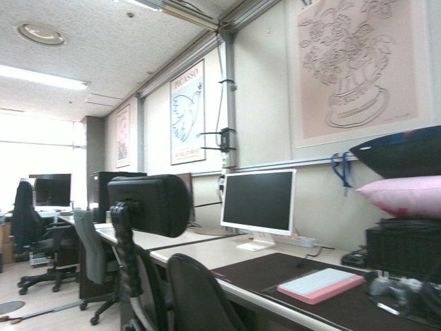
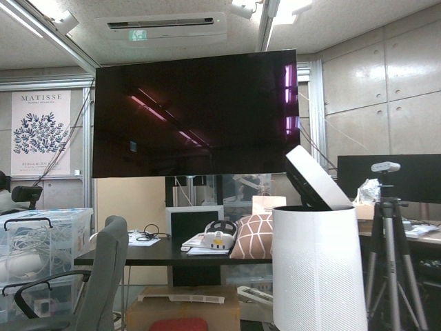
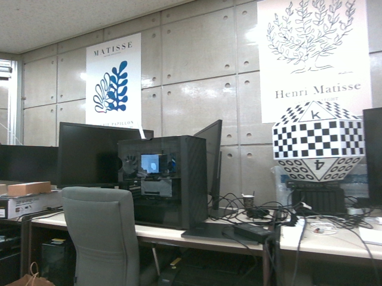
keyframes Ki along the run → time
- 3,844 / 3,844 frames tracked, 11.6 ms per frame (2,000 features)
- 130 keyframes; loop closure and bundle adjustment correct past keyframes
- output per frame: TW←S(t) and reference keyframe Kref
2. Improved Zero-Shot 6D Object Pose Estimation (text prompts + verification gates)
2-1. Text-prompted proposals and masks (frame 1808)
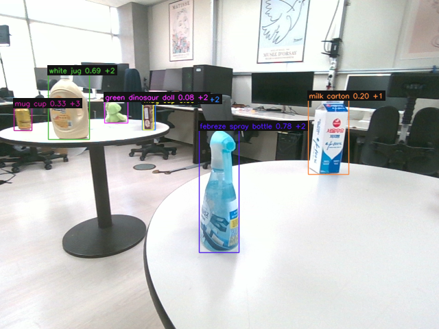
YOLO-World: 7 boxes (21 ms)
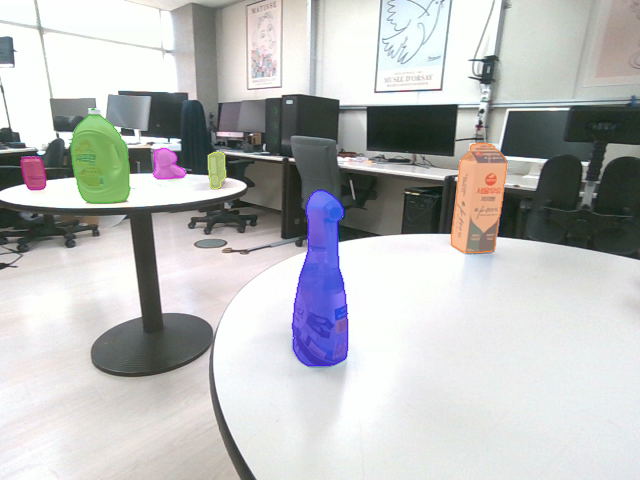
MobileSAM masks (46 ms)
prompts: "milk carton", "white jug", "febreze spray bottle", "green dinosaur doll", … (9 objects)
Accepted candidates
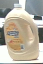
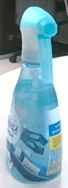
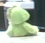
Candidate gates (sequential; real scores)
| # | owner | YOLO | ①sem. ≥.35 | ②app. ≥.605 | ③color ≥.12 | ④ |
|---|
| 0 | milk | 0.20 | 0.64 ✓ | 0.79 ✓ | 0.54 ✓ | accept |
| 1 | snack | 0.03 | 0.30 ✗ | 0.57 | 0.51 | reject |
| 2 | jug | 0.69 | 0.72 ✓ | 0.77 ✓ | 0.68 ✓ | accept |
| 3 | spray | 0.78 | 0.63 ✓ | 0.73 ✓ | 0.45 ✓ | accept |
| 4 | jug | 0.33 | 0.26 ✗ | 0.65 | 0.36 | reject |
| 5 | snack | 0.09 | 0.32 ✗ | 0.60 | 0.47 | reject |
| 6 | dino | 0.08 | 0.42 ✓ | 0.70 ✓ | 0.26 ✓ | accept |
gray: not evaluated (rejected earlier) · ④ exclusive assignment: one box per object
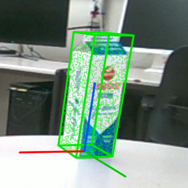
2-2. PEM + pose verification (milk carton)
hypotheses 6000 → 300
silhouette IoU ≥ 0.42: 267 · feature ≥ 0.45: 250
consensus cluster: 153 (0.61)
final IoU 0.87, feature 0.68 · PEM 1.61 s (4 objects)
3. Asynchronous Timing (different processing rates; measured)
- SLAM 30 Hz, 6D estimation 2.1 Hz (265 processed images in 128 s)
- each 6D result keeps its capture time tc; arrival delay median 1.57 s
- poses, keyframe lists and results arrive late and out of order over the LAN
4. Capture-Time Registration (to the reference keyframe)
1Interpolate SLAM pose at tc
TW←S(tc) (interpolated)
2Reference keyframe Kref(tc) = K65
3Apply camera extrinsic and store in the keyframe frame
TK←O = TW←K−1 · TW←S(tc) · X · TR←O
X: recognition→SLAM camera extrinsic · K: reference keyframe
Anchored Object Observation (output of step 4, real)
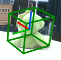
| Object ID | Label | Reference keyframe | Relative pose | Capture time | Arrival | Score | Mask |
|---|
| 3 | Dinosaur | K65 | TK←O | 59.75 s | +1.9 s | 0.68 | ✓ |
B. Keyframe-Anchored Spatial Object Mapping (object state map + loop-closure update)
5. Keyframe-Anchored Object State Map (main contribution) — 260915 run, real
▲ anchor keyframe ▲ other keyframe
- - - relative pose TK←O
Object state (end of run)
| ID | Label | Anchor | Score | Obs. | State |
|---|
+ 2 tentative objects (not shown, not displayed)
Existence probability p
tentative
↓ ≥ 2 obs., p > 0.6
active
↓ miss in view and in range
lost (p < 0.3)
↓ p < 0.05, ≥ 5 obs.
remembered
re-detected → same ID
deleted
6. Loop-Closure Object-Map Update (main contribution)
Real run with a 3.05 m loop correction (large figure-eight, 260901): anchored objects move with their keyframes.
Before loop closure
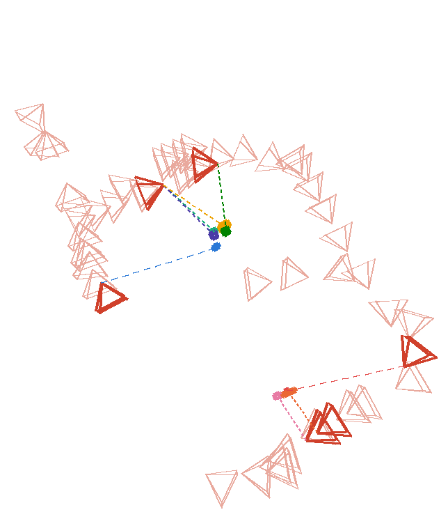
SLAM loop closure
(graph optimization)
➜
keyframes moved by up to 3.05 m
After loop closure
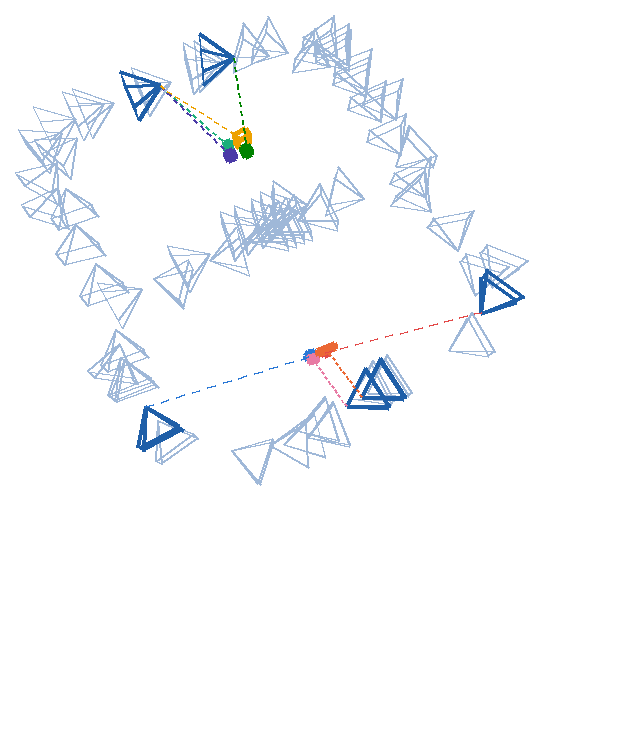
T′W←O = T′W←K · TK←O (TK←O unchanged)
- same 119 results: 68 stored in the map frame vs 6 anchored are > 10 cm from the final object position
7. Result: Consistent 3D Object State Map
- SLAM real-time (0 dropped frames) with 6D results arriving 1.6 s late
- 8 objects confirmed, 0 same-class duplicates (260915 run)
- objects keep their positions across loop closures
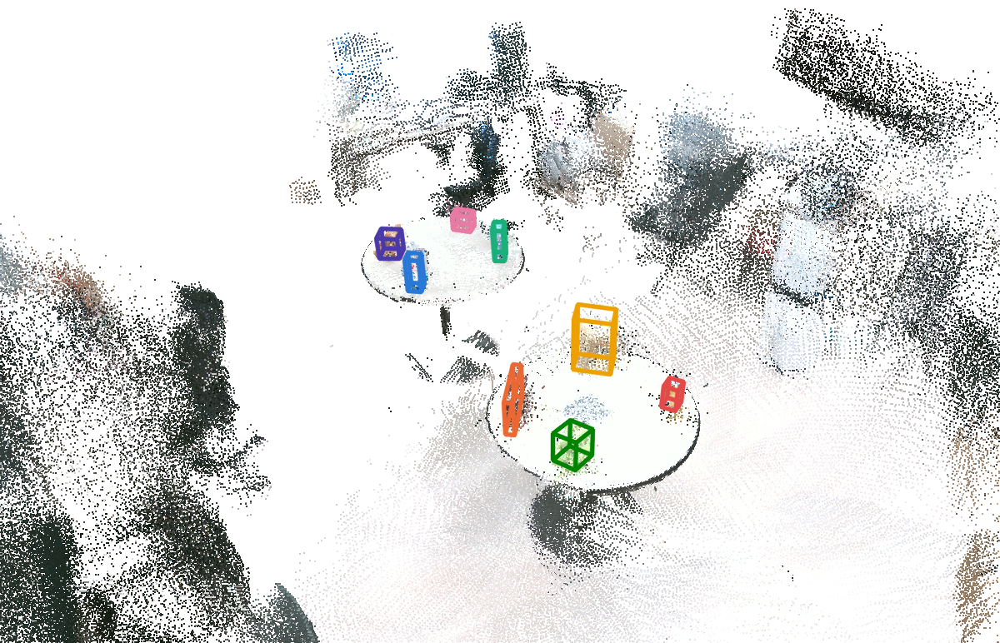
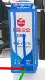
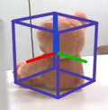
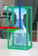
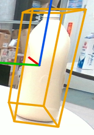
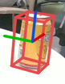
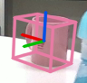
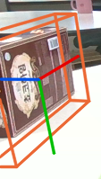